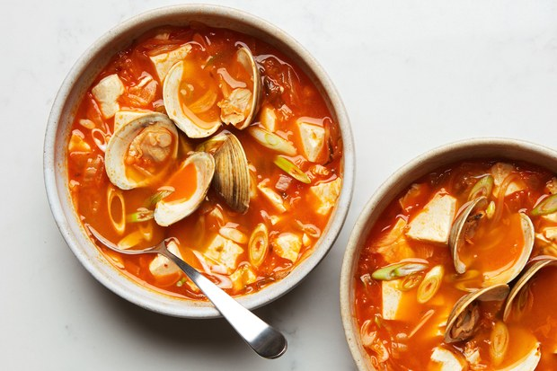

Kimchi Soup with Tofu and Clams
Two flavor powerhouses—bright, spicy kimchi and savory, briny clams—create a soup fast enough to make on even the most hectic weeknight. Clams can be very salty or not at all, so wait until they have opened before adjusting the seasoning.
